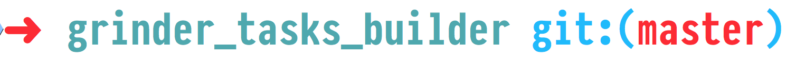

Лайфхаки во фронтенд разработке
Алексей Золотых
Лайфхаки во фронтенд разработке
Алексей Золотых
Лайфхаки
Алексей Золотых

0. Метрики — наше все


1. Слишком много информации

Как работает foldr в haskell
-- foldl is left-handed, foldr is right-handed
foldr (\x y -> 2*x + y) 4 [1,2,3] -- 16
awesome + <то, что я изучаю>

Лист листов
awesomelists.top
Найди мне такое же, только бесплатно
alternativeto.net
- Gogs gogs.io
- Gitea gitea.io
- Gitbucket gitbucket.github.io
- Girprep gitprep.yukikimoto.com
3. Затачивайте пилу
Я люблю консоль
Клавиатурные сочетания
- Tab
- Ctrl + R
- Ctrl + X, Ctrl + E
Любимые утилиты
- ohmyzsh
- z
- fzf
- gnu parallel
- ripgrep
- git
Тема
Z
z builder # cd /Users/zolotyh/grinder_tasks_builder
z # + enter?
FZF - нечеткий поиск в Unix стиле


tldr
npm install -g tldr